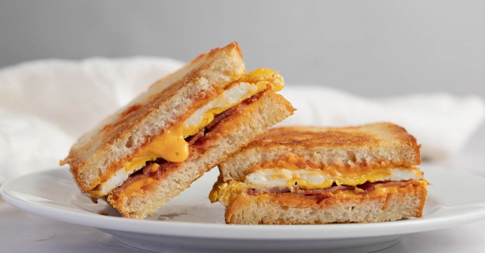
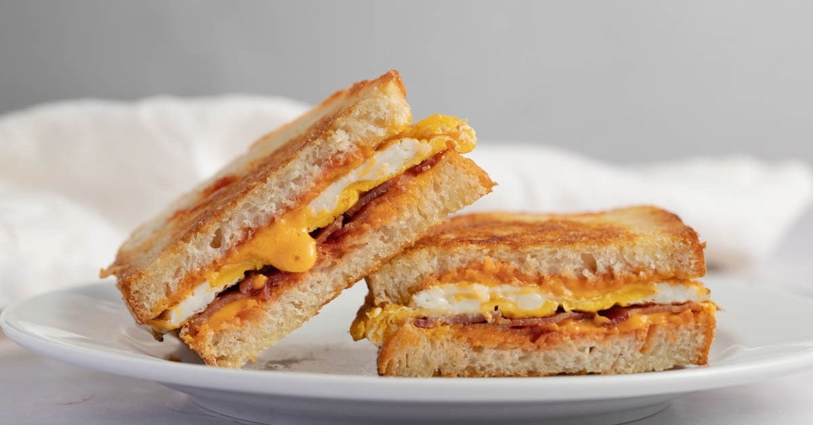

ABOUT ME:
Food is what keeps me going. Whether it's breakfast, lunch or dinner, It is important to eat at least 3 meals a day. Since I love food so much I'll have to cook just as much, because of this, I decided to highlight some of my favorite reciepies that I love to not only make but also consume on my spare time. In this website you will be provided with detailed instructions on how to prepare some of these dishes and the lists of the ingredients you'll need in order to follow along. The recipes will be seperated in 3 sections, breakfast, lunch and dinner. Each will contain a dish for that allocated timed meal and in case you are in the mood for whichever meal you desire you would scroll to section and it will all be provided.
You'll then be able to access video tutorials where in case if it's difficult to follow along with the instructions. A video will be provided in the tutorials tab so that you can follow along with that instead of the instructions. You'll be able to click on the video and be able to play it and of course if you'd like to go to the original video where it was posted, a resources sidebar will be there ready for you.
 

{kind=link}